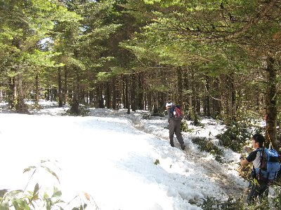
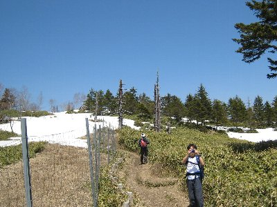
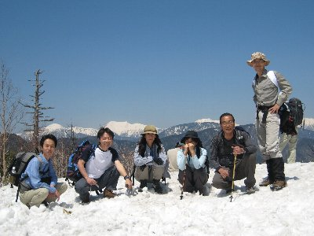

山伏ハイク（おにぎり部） | 2008年4月 |
|---|---|
| 温かくなってきた4月、おにぎり部は何処か行きたくてウズウズしてました。今シーズン初と言うことでもあり、簡単で景色が良さそうな所ってことで、いづみさんが以前から行きたかった「山伏」に行くことにしました。 （注：おにぎり部とは、手軽に山に行き、山頂でおにぎりを食べることを目的としています） 山伏は南アルプスの南部、井川湖の東側にあたる標高2014mの山で、花が沢山咲くことでも有名らしく結構人気があります。 ルート的には幾つか有りますが、当然、我がおにぎり部は一番簡単な県民の森コースです♪ 一番奥の駐車場から1時間位で登れてしまう、ホントなんちゃってハイキングです。 ですが、駐車場に行くまでの道は長く、静岡市街地から2時間位掛かります。 県民の森から奥は未舗装路で、車高が低い車はキツイでしょう。 | |
 登りはじめはチョット雪が有る感じ |  途中からはバッチリ雪中行軍 |
| 今回のメンバーは6名で、その中に鎖骨が折れたままの私も入ってます。 肩に負担をかけないために、ウエストバックに荷物を入れ、入りきらなかったジャケットだけ、えい。さんに持って頂きました。 出掛けるときは「今日は暑いね」といっていたはずですが、現地駐車場に着くと肌寒く、ちょこっと雪まで残っていました。 それでも元気良く出発！ 登って行く先々で多くの人とすれ違いました。さすが人気の山ですね。 30分ほど登ったところでしょうか、林の中を歩く場所で登山道が雪に覆われてきて、道を外れると膝まで埋まりそうな雪の量です。 道も皆が通って、つぼ足状態になった解けかかったシャーベット状なので、歩きにくいです。 滑ります。 | |
|  山頂付近。左の柵はシカの食害から花を守るためだって |  蒼い空が綺麗でした |
| なんのかんの言っても、1時間程で山頂には着きました。 雪の白さが眩しい〜〜〜(@_@) 山頂も、半分くらい雪に覆われていて、真っ青な空と、緑と雪の白さが相まって景色がいいです！ 東側の山々には雲が掛かっていた為、富士山を見ることは出来ませんでしたが、南アルプス方面は、山頂が白い茶臼岳や上河内岳などが見え、いい感じです。 お腹も空いたので、目的のおにぎりを！ 今回は、えい。さんはソーセージを焼いてみたり、かむいさんは、一度やってみたかったと言うカップヌードルを食べてみたり、サムちゃんにいたっては、キノコのワイン蒸し（？）や、タンシチューを食べてました。もちろんおにぎりもね。 | |
|  今回のメンバー。山頂で、南アルプスをバックに。 |  コーヒー集会♪ |
| 食後には当然コーヒーを。山伏山頂でコーヒー集会成功です♪ 雪原の上で、南アルプスを眺めながらのコーヒータイムは格別です！ 雪が沢山有った為、前回に引き続きかむいさんが、雪だるまを製作！ 名前は雪也くん。 前回の雪雄くんの弟だそうで、ちょっとやんちゃな感じがしますね。 下りは、雪で滑らないように慎重に歩いて、それでも1時間で駐車場へ。 帰りがけに口坂本温泉に入り帰路に着きました。 | |
 雪だるま兄弟の弟、雪也くん |  山頂付近は結構な雪でした |
| いや〜、花には早かったですが、気持ちの良い景色と空気で、引き篭もりがちだった私はリフレッシュ出来ました。 えい。さんには荷物を持って頂いたり、長時間の車の運転ありがとうございます。 写真見ると、スゲー雪の中を行ってきたようですが、普段のハイキングスタイルで、短時間で行けるので、楽して雪山に行ったように見える写真に成りましたね。 今シーズンも、おにぎり部よろしくお願いします〜！ 写真＆コメント ｂｙ べっしー | |